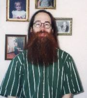
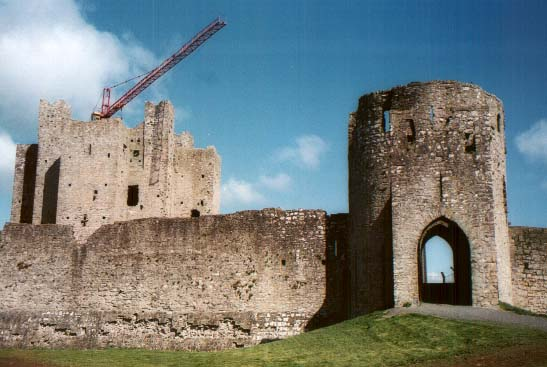
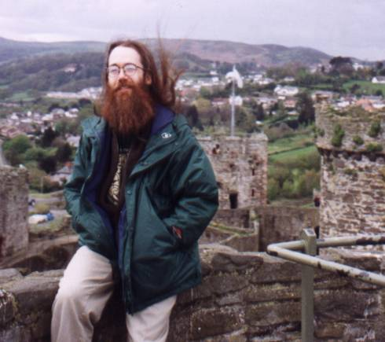
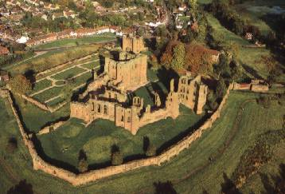
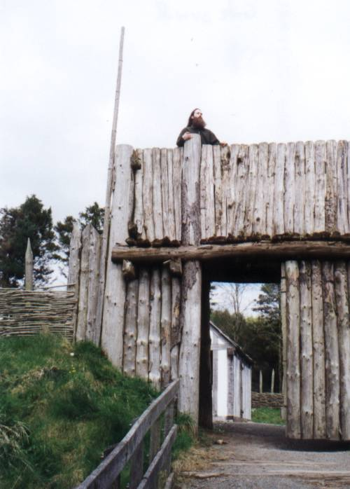
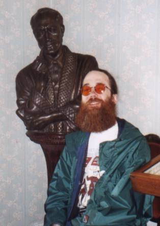
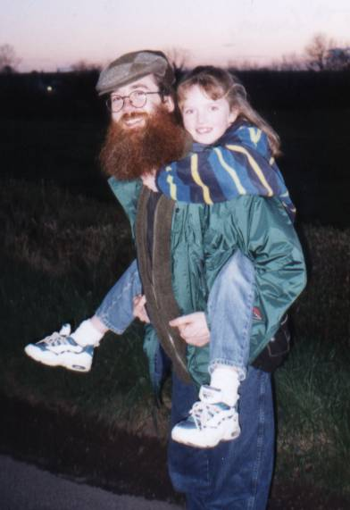

Khevron's European Vacation Page
Khevron (Don's) European Vacation Page
I took leave of 43 days, (April/May 1999) and used some at each end to shop in Anchorage and visit people, but about 4 weeks were spent in Europe. Well, we never hit the continent, but we hit Ireland and the United Kingdom, and I went to Denmark and Sweden.
Here are a few pictures, more to be posted later!

This is me in Northern Ireland just before the first of 2 beard trims.
This was my 'Castle tour' and many castles were visited:
Trim Castle - near Dublin

Dublin Castle -in Dublin
Castle Coole - Northern Ireland
Old Castle Archdale - Northern Ireland
Stirling Castle - Scotland
Edinburgh Castle - Scotland
Conwy Castle - Wales - The wind just picked up as the picture was taken...

Kenilworth Castle - England

Arundel Castle - England
Hastings Castle - England
Leeds Castle - England
Ribe Slotsbanke - Danmark
Other cool places visited:
Tara - Ireland
New Grange - Ireland
Ulster American History Park, Omagh, N.I.
History Park - Ulster N. Ireland

Belfast, N.I.
Cambridge University town
The Orchard, in Grantchester
London

An asian lady and I couldn't speak to each other verbally, but we exchanged camera's for mutual pic's the the sherlock bust.
Ribe - Denmark
Roskilde - Denmark
Copenhagen - Denmark
Malmo, Sweden
SCA - Double-wars in Sweden
Seattle, Washington.
Met dozens of lost relatives in Northern Ireland (Mother's side - Wilson). Well, it's debatable as to who exactly was "lost"...

This is my 5th cousin Laura and me by the family farm.
Okay, here's the photo-tour. I've scanned in selections from my capacious photo-albums, so, click here:
for Khevron's Photo Tour.
It's under construction, and so far I'm having a slight difficulty with the link.. You may change the last word (europe.html) of the Location URL above this window to: europetrip/ke1.html
that will start you into the tour - first 27 pic's.
To the Northern Ireland Family page
Back to Khevron's travel Page
Back to Khevron's Main Page